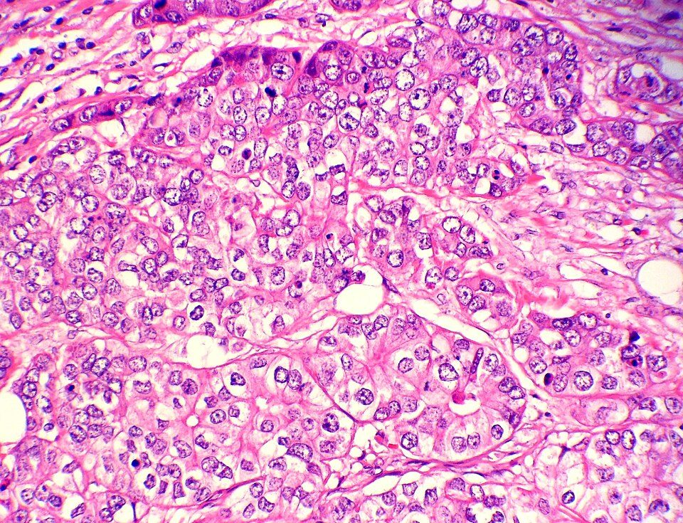

Información divulgativa. No sustituye la valoración de tu equipo médico ni sirve para decidir un tratamiento.


En resumen
| Qué es | Cáncer de mama sin receptores de estrógenos ni de progesterona y sin exceso de HER2 |
| Frecuencia | Alrededor del 10-15 % de los cánceres de mama |
| Quién | Más frecuente en mujeres menores de 40 años, de ascendencia africana y portadoras de BRCA1 |
| Tratamiento | Quimioterapia, a menudo antes de la cirugía, con inmunoterapia en los de alto riesgo |
| Particularidad | Las recaídas, si ocurren, suelen ser en los primeros tres a cinco años |
Qué es
Se llama triple negativo porque en la biopsia no se detectan las tres dianas clásicas del tratamiento: el receptor de estrógenos, el de progesterona y la proteína HER2 en exceso. Por eso no responde a la hormonoterapia ni a los anti-HER2 tradicionales. Suele ser de alto grado y crecer deprisa, pero también es especialmente sensible a la quimioterapia.
En realidad agrupa varios tipos con biología distinta: los de tipo basal (la mayoría), los ricos en linfocitos, que tienen mejor pronóstico, los de receptor de andrógenos positivo y algunos tipos especiales poco agresivos, como el carcinoma adenoide quístico.
Factores de riesgo
- Variantes en BRCA1: alrededor del 70 % de los cánceres de mama en portadoras de BRCA1 son triples negativos, y entre el 10 y el 20 % de los triples negativos tienen una variante hereditaria en BRCA1, BRCA2 u otros genes. Por eso se recomienda estudio genético a todas las personas con este subtipo, al menos hasta los 60 años según las guías.
- Edad joven y premenopausia.
- Ascendencia africana.
Síntomas y diagnóstico
Como otros cánceres de mama, suele notarse como un bulto, a veces de crecimiento rápido entre dos mamografías (cáncer de intervalo). El diagnóstico se hace con mamografía, ecografía y biopsia con aguja gruesa, donde la inmunohistoquímica confirma la ausencia de receptores y de HER2. Se completa con estudio de extensión si el tumor es grande o hay ganglios, y con el estudio genético.
Tratamiento de la enfermedad localizada
- En tumores pequeños (menos de 1-2 cm y sin ganglios), cirugía primero y después quimioterapia según el tamaño.
- En el resto, quimioterapia neoadyuvante (antes de la cirugía). El esquema estándar para el estadio II-III combina pembrolizumab (inmunoterapia) con carboplatino, taxanos y antraciclinas, según el ensayo KEYNOTE-522, que mejoró la supervivencia global.
- Cirugía conservadora o mastectomía y estudio de los ganglios.
- Radioterapia según la cirugía y el estadio.
- Si tras la quimioterapia queda tumor, se continúa con capecitabina, o con olaparib en las portadoras de BRCA, y se completa el año de pembrolizumab.
- Lograr una respuesta patológica completa (que no quede tumor en la pieza operada) es un muy buen signo pronóstico.
Enfermedad metastásica
- Si el tumor expresa PD-L1, inmunoterapia con quimioterapia en primera línea.
- Sacituzumab govitecán, un anticuerpo conjugado contra TROP2, en líneas posteriores, y trastuzumab deruxtecán si el tumor es HER2 bajo.
- Inhibidores de PARP (olaparib, talazoparib) en portadoras de BRCA.
- Quimioterapia en monoterapia o combinada.
- Ensayos clínicos con nuevos anticuerpos conjugados.
Pronóstico
El riesgo de recaída es mayor que en otros subtipos durante los primeros años, pero si no hay recaída en cinco años es poco probable que aparezca después. La supervivencia de la enfermedad localizada ha mejorado de forma clara con la inmunoterapia: en KEYNOTE-522, más del 80 % de las pacientes con estadio II-III estaban vivas a cinco años. La enfermedad metastásica sigue siendo difícil de tratar, aunque los anticuerpos conjugados han alargado la supervivencia.
Preguntas para tu equipo
- ¿Debo recibir la quimioterapia antes de la cirugía?
- ¿Me corresponde la inmunoterapia y qué efectos puede tener?
- ¿Cuándo tendré el resultado del estudio genético y qué implica para mi familia?
- ¿Qué pasa si queda tumor después de la quimioterapia?
Ver también: Cáncer de mama, Inmunoterapia, Riesgo hereditario y consejo genético.
Historia · Medicapedia
Cáncer de mama triple negativo en la historia de la medicina
Cómo se descubrió, quién lo investigó y cómo cambió su tratamiento a lo largo de los siglos, contado en Medicapedia, nuestra web hermana de historia de la medicina.
Leer la historia en Medicapedia ↗Fuentes
- Schmid P, et al. Overall survival with pembrolizumab in early-stage triple-negative breast cancer (KEYNOTE-522). N Engl J Med. 2024;391:1981-1991. doi:10.1056/NEJMoa2409932
- Bardia A, et al. Sacituzumab govitecan in metastatic triple-negative breast cancer. N Engl J Med. 2021;384:1529-1541. doi:10.1056/NEJMoa2028485
- Tutt ANJ, et al. Adjuvant olaparib for patients with BRCA1- or BRCA2-mutated breast cancer (OlympiA). N Engl J Med. 2021;384:2394-2405. doi:10.1056/NEJMoa2105215
- Loibl S, et al. Early breast cancer: ESMO Clinical Practice Guideline. Ann Oncol. 2024;35:159-182. doi:10.1016/j.annonc.2023.11.016